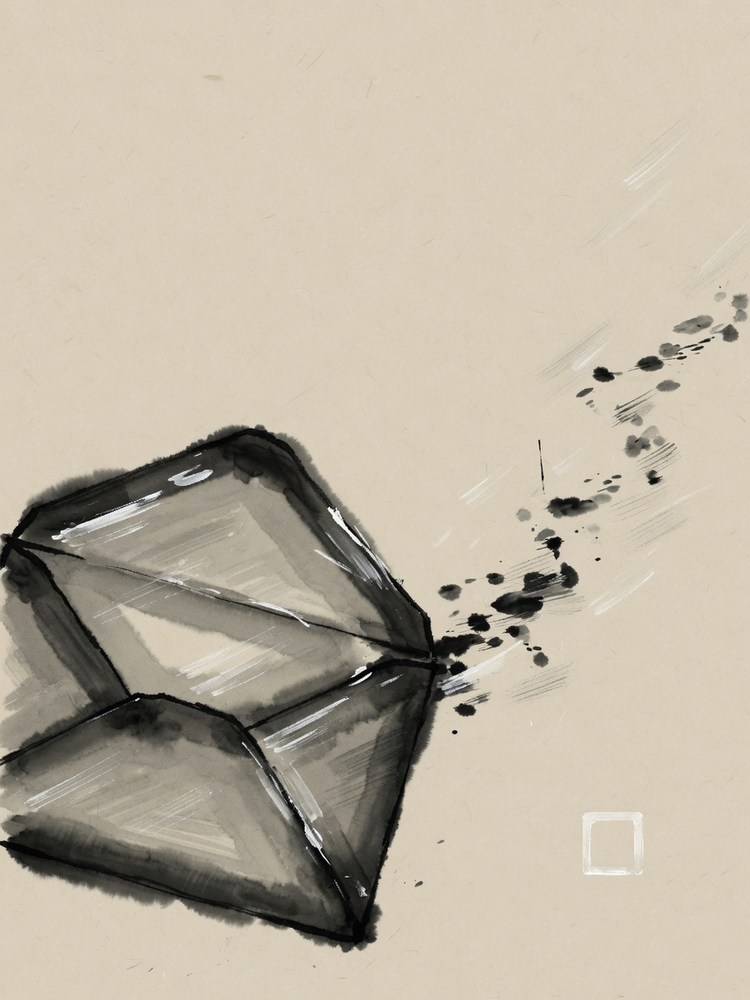
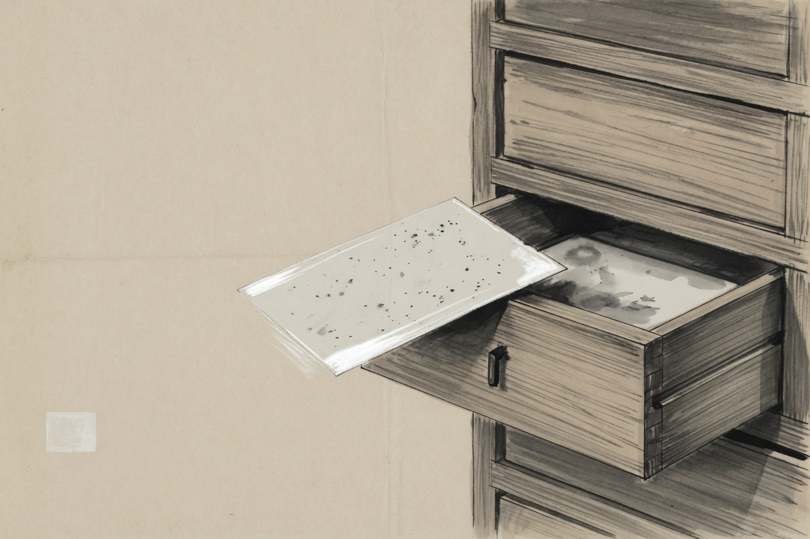
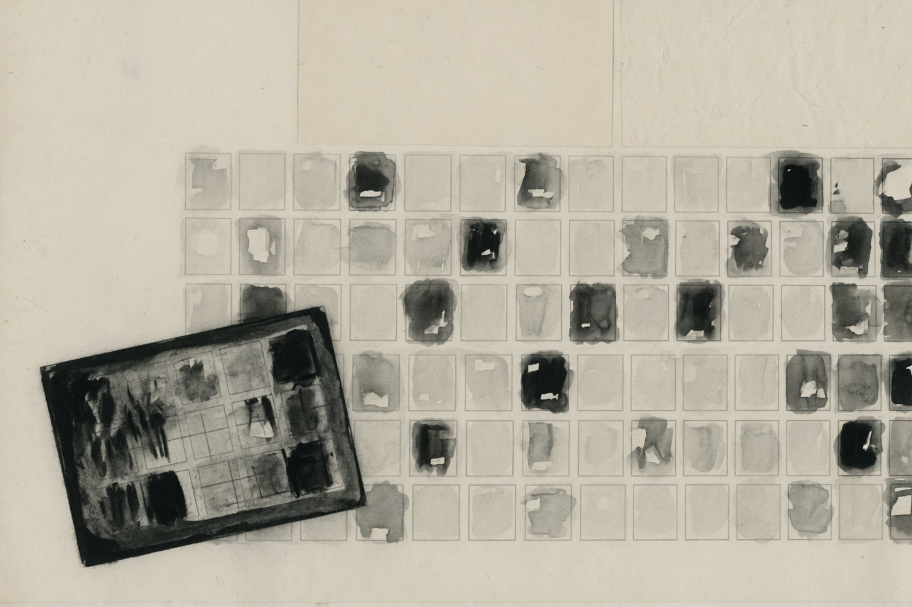
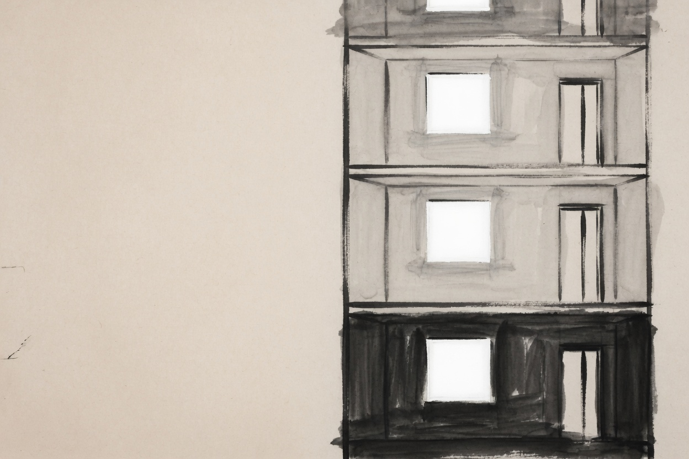
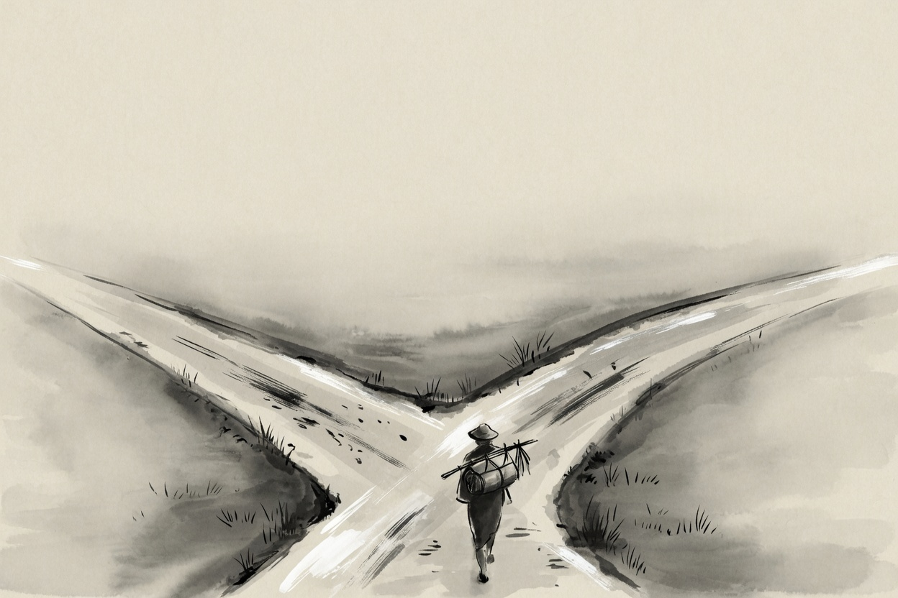

脚往低处走
一蒙眼下山
山路没有灯。你还是得往下走。
看不见，就问脚。哪边陡，哪边就是往上。于是朝反方向迈一小步。再问。再迈。
步子太大，人会在两边来回晃。太小，走一夜也到不了谷底。
脚比眼清楚。
模型学东西，也是这么走的。它猜错了，就顺着更陡的那边，把一堆数字拧回来一点点。
去互动版，亲手训一条直线模型一册
从输入到办事

夜里有人问路：字是怎么变成事的？
这一册不讲公式。只讲七件小事。从一封信进门，到一个人带着工具走出去。
脚往低处走
山路没有灯。你还是得往下走。
看不见，就问脚。哪边陡，哪边就是往上。于是朝反方向迈一小步。再问。再迈。
步子太大，人会在两边来回晃。太小，走一夜也到不了谷底。
脚比眼清楚。
模型学东西，也是这么走的。它猜错了，就顺着更陡的那边，把一堆数字拧回来一点点。
去互动版，亲手训一条直线字先变成数
模型不认字。它只认数。
所以进门之前，先把一句话拆成小块。每块去抽屉里抽一张卡片。卡片上不是字，是一串坐标。意思近的，抽屉也挨着。
「注意力」常常抽成一整张。「unbelievable」却被拆成三张。不是它不懂英文，是常放在一起的，粘成一块更省事。
字先变成坐标，才进得了门。

不是全看
读到「它饿了」，你会回头找「小猫」。
模型也这么干。手里捏着一张卡片，去对整面墙。哪张跟它有关，就多看一眼。无关的，当没看见。
问题很小。先看见谁，再取回什么。
不是全看。是先看该看的。

户型不变
一间屋子，复印很多遍，叠起来。
每间屋子干的事差不多：看看别人，自己想一想，再交给上一层。进门出门的尺寸必须一样，不然叠歪。
叠到九十六层，还是同一间屋子。变的是屋里的家具，不是户型。
户型不变，才能往上盖。

下一空
会写一个词，不等于会说话。
真正让它懂语言的，是一件无聊的事：把下一空填上。填了万亿次。「今天天气真____」要填对，得懂一点人间。
写的时候还有三个旋钮。拧紧，字就死。拧松，字就野。
空着的那条线，写了万亿次。
墙冻住
墙已经砌好了。你只想让它会写病历，或者会说你们那儿的行话。
把整堵墙拆了重砌，太贵。于是墙冻住。变化写在掀起的那一层薄片上。
薄片很小，换起来也快。
墙不动。动的是掀起来的那一层。
可以回头
问一句答一句，办不了复杂的事。
得出门。带着家伙。走到岔路，看一眼做得好不好。不好，就绕回来再走。
单行道不能回头。画出岔路，才允许绕。
想，做，看，再想。
